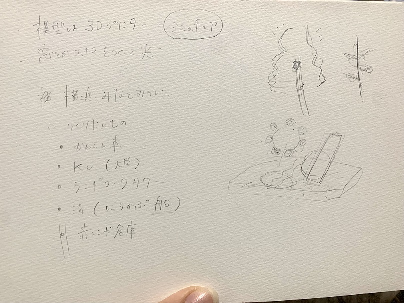
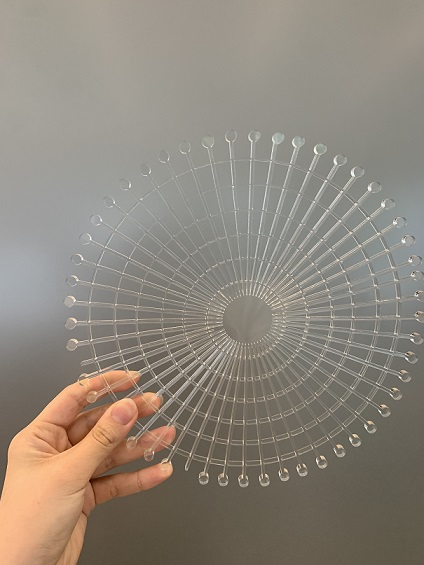
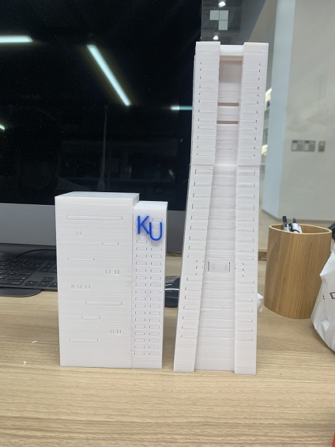

第6回
project note
アイディアのスケッチ

概要
・みなとみらいの街をミニチュア化して再現する
（観覧車、ランドマークタワー、赤レンガ倉庫、神奈川大学）
・建物などはデジファブを使って作る
・作った建物の中にLEDをいれ、夜の夜景をイメージする
プロセスメモープロセス・必要なモノ・ステップ（プロジェクトマネジメント）

・ゴンドラが上手く合体出来ていなかったり、真ん中にモーターを入れて動かすための穴を
あけられていなかったため作り直した

・建物はサポートがなるべくつかないように作り方を工夫した
使用したモノ
・fusion360（建物）
・レーザーカッター（アクリル板）→観覧車
・LEDライト（レインボー：1.青：3.白：6.赤：2）
紹介動画
・youtube
使用したサイト
・LEDライト
グループの人
・百香
・莉子
・haruna